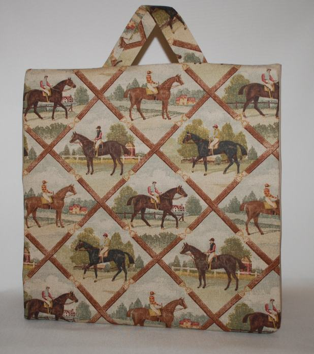
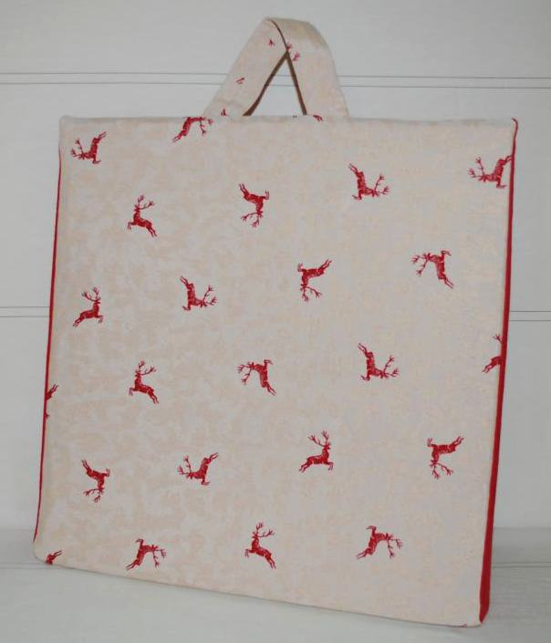
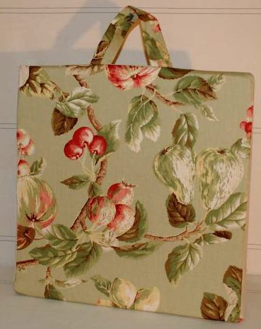
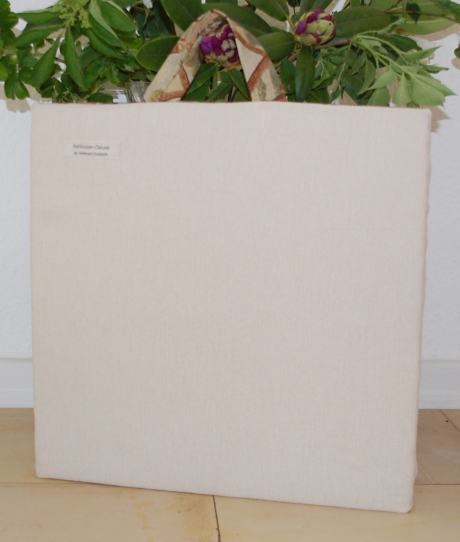
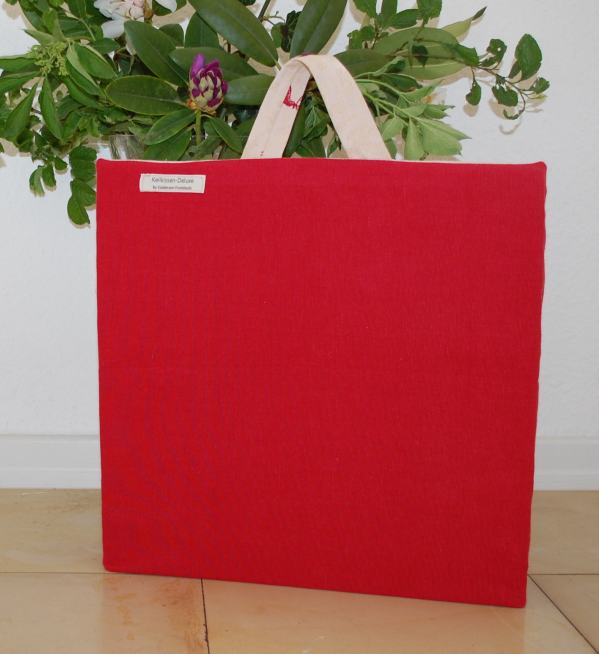

GoldmannFootstools
info@footstools.deTel: 0151 - 681 856 50
 Country Line
Country Line City Forum
City Forum Signature Edition
Signature Edition Stoffe
Stoffe Hochzeitsbank
Hochzeitsbank
Keilkissen-Deluxe -
DAS handlich-tragbare Mode-Accessoire
Die Idee kam von einer lieben Kollegin: Jetzt mach' endlich was mit Deinen schönen Stoffen! Wir sind es leid, unterwegs auf unser rückenfreundliches Keilkissen zu verzichten oder es schmucklos unter dem Arm geklempt mitzunehmen."
Die Aufforderung ist angekommen !
Wir haben 3 unterschiedlich-hübsche Designs für Keilkissen mit handlichem Tragegriff in unser Sortiment aufgenommen. Top Stoffe mit Reißverschluß und hochwertigem Sitzschaumstoff.
Wie bei Footstools, so gilt auch hier: Qualität in Material und Verarbeitung ist oberstes Gebot!
Lassen auch Sie sich begeistern. Jetzt nehmen Sie stilvoll und bequem Platz, wo immer Sie sind. Sie haben es in der Hand.
Die Idee kam von einer lieben Kollegin: Jetzt mach' endlich was mit Deinen schönen Stoffen! Wir sind es leid, unterwegs auf unser rückenfreundliches Keilkissen zu verzichten oder es schmucklos unter dem Arm geklempt mitzunehmen."
Die Aufforderung ist angekommen !
Wir haben 3 unterschiedlich-hübsche Designs für Keilkissen mit handlichem Tragegriff in unser Sortiment aufgenommen. Top Stoffe mit Reißverschluß und hochwertigem Sitzschaumstoff.
Wie bei Footstools, so gilt auch hier: Qualität in Material und Verarbeitung ist oberstes Gebot!
Lassen auch Sie sich begeistern. Jetzt nehmen Sie stilvoll und bequem Platz, wo immer Sie sind. Sie haben es in der Hand.
 |
 |
 |
|
| DERBY | ROTER HIRSCH | AMROSISA |
{kind=link}
{kind=link}
{kind=link}
 |
 |
||
| Derby Rückseite | Roter Hirsch Rückseite | Ambrosia Rückseite |
{kind=link}
{kind=link}